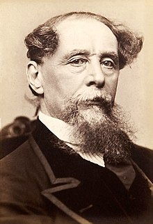

New World of Books
Hello Book Lovers.You are at the right place.Here you get the wide range collection of Famous books. Books with different genere are available like Fantacy, Mystery Triller, Horror, Romantic etc.here we can buy best seller books.

Harry Potter is a series of seven fantasy novels written by British author J. K. Rowling. The novels chronicle the lives of a young wizard, Harry Potter, and his friends Hermione Granger and Ron Weasley, all of whom are students at Hogwarts School of Witchcraft and Wizardry. The main story arc concerns Harry's conflict with Lord Voldemort, a dark wizard who intends to become immortal, overthrow the wizard governing body known as the Ministry of Magic, and subjugate all wizards and Muggles (non-magical people).

War and Peace is a literary work by Russian author Leo Tolstoy. Set during the Napoleonic Wars, the work mixes fictional narrative with chapters discussing history and philosophy. An early version was published serially beginning in 1865, after which the entire book was rewritten and published in 1869. It is regarded, with Anna Karenina, as Tolstoy's finest literary achievement and remains an internationally praised classic of world literature.

The Great Gatsby is a 1925 novel by American writer F. Scott Fitzgerald. Set in the Jazz Age on Long Island, near New York City, the novel depicts first-person narrator Nick Carraway's interactions with mysterious millionaire Jay Gatsby and Gatsby's obsession to reunite with his former lover, Daisy Buchanan.The novel was inspired by a youthful romance Fitzgerald had with socialite Ginevra King, and the riotous parties he attended on Long Island's North Shore in 1922. Following a move to the French Riviera, Fitzgerald completed a rough draft of the novel in 1924.

Crime and Punishment is a novel by the Russian author Fyodor Dostoevsky. It was first published in the literary journal The Russian Messenger in twelve monthly installments during 1866.[1] It was later published in a single volume. It is the second of Dostoevsky's full-length novels following his return from ten years of exile in Siberia. Crime and Punishment is considered the first great novel of his mature period of writing[2] and is often cited as one of the greatest works of world literature
Beloved is a 1987 novel by American novelist Toni Morrison. Set in the period after the American Civil War, the novel tells the story of a dysfunctional family of formerly enslaved people whose Cincinnati home is haunted by a malevolent spirit. The narrative of Beloved derives from the life of Margaret Garner, a slave in the slave state of Kentucky who escaped and fled to the free state of Ohio in 1856.Garner was subject to capture under the Fugitive Slave Act of 1850, and when U.S.
| Sl.No | Book Title | Author | ISBN | Price |
|---|---|---|---|---|
| 1 | Harry potter | J. K. Rowling | 5464464668 | 250 |
| 2 | War and Peace | Leo Tolstoy | 9797656549 | 500 |
| 3 | The Great Gatsby | F. Scott Fitzgerald | 2135446520 | 450 |
| 4 | Crime and Punishment | Fyodor Dostoevsky | 4654656461 | 100 |
| 5 | Beloved | Toni Morrison | 5165456841 | 300 |
 William Shakespeare (c. 23[a]
April 1564 - 23 April
1616)[b] was an English playwright, poet, and actor.
He
is widely regarded as the greatest writer in the English language and the world's pre-eminent
dramatist.[4][5][6] He is often called England's national poet and the "Bard of Avon" (or simply "the
Bard"). His extant works, including collaborations, consist of some 39 plays, 154 sonnets, three long
narrative poems, and a few other verses, some of uncertain authorship. His plays have been translated
into
every major living language and are performed more often than those of any other playwright.[7]
Shakespeare
remains arguably the most influential writer in the English language, and his works continue to be
studied
and reinterpreted.
William Shakespeare (c. 23[a]
April 1564 - 23 April
1616)[b] was an English playwright, poet, and actor.
He
is widely regarded as the greatest writer in the English language and the world's pre-eminent
dramatist.[4][5][6] He is often called England's national poet and the "Bard of Avon" (or simply "the
Bard"). His extant works, including collaborations, consist of some 39 plays, 154 sonnets, three long
narrative poems, and a few other verses, some of uncertain authorship. His plays have been translated
into
every major living language and are performed more often than those of any other playwright.[7]
Shakespeare
remains arguably the most influential writer in the English language, and his works continue to be
studied
and reinterpreted.
Charles John Huffam Dickens 7 February 1812 9 June 1870 was an English novelist and social critic who created some of the world's best-known fictional characters, and is regarded by many as the greatest novelist of the Victorian era.[1] His works enjoyed unprecedented popularity during his lifetime and, by the 20th century, critics and scholars had recognised him as a literary genius. His novels and short stories are widely read today Born in Portsmouth, Dickens left school at age 12 to work in a boot-blacking factory when his father John was incarcerated in a debtors' prison. After three years, he returned to school before beginning his literary career as a journalist. Dickens edited a weekly journal for 20 years; wrote 15 novels, five novellas, hundreds of short stories and nonfiction articles; lectured and performed readings extensively; was an indefatigable letter writer; and campaigned vigorously for children's rights, education, and other social reforms.
 Lev Nikolayevich Tolstoy Russian:
9 September [O.S. 28
August] 1828 - 20 November [O.S. 7 November] 1910,
usually referred to in English as Leo Tolstoy, was a Russian writer. He is regarded as one of the
greatest
and most influential authors of all time.[3][4] He received nominations for the Nobel Prize in
Literature
every year from 1902 to 1906 and for the Nobel Peace Prize in 1901, 1902, and 1909.Born into an
aristocratic
family, Tolstoy's notable works include the novels War and Peace (1869) and Anna Karenina (1878),[5]
often
cited as pinnacles of realist fiction,[2] and two of the greatest books of all time.[3][4] He first
achieved
literary acclaim in his twenties with his semi-autobiographical trilogy, Childhood, Boyhood, and Youth
(1852-1856), and Sevastopol Sketches (1855), based upon his experiences in the Crimean War.
Lev Nikolayevich Tolstoy Russian:
9 September [O.S. 28
August] 1828 - 20 November [O.S. 7 November] 1910,
usually referred to in English as Leo Tolstoy, was a Russian writer. He is regarded as one of the
greatest
and most influential authors of all time.[3][4] He received nominations for the Nobel Prize in
Literature
every year from 1902 to 1906 and for the Nobel Peace Prize in 1901, 1902, and 1909.Born into an
aristocratic
family, Tolstoy's notable works include the novels War and Peace (1869) and Anna Karenina (1878),[5]
often
cited as pinnacles of realist fiction,[2] and two of the greatest books of all time.[3][4] He first
achieved
literary acclaim in his twenties with his semi-autobiographical trilogy, Childhood, Boyhood, and Youth
(1852-1856), and Sevastopol Sketches (1855), based upon his experiences in the Crimean War.